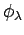
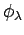
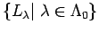
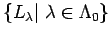

Remember that
 is a coalgebra for each
is a coalgebra for each
 . Therefore, its dual
. Therefore, its dual  -module inherits the structure of an
-module inherits the structure of an
 -algebra. We define
-algebra. We define
and call it the symplectic  -Schur algebra. Two linear forms
are multiplied by convolution, that is
-Schur algebra. Two linear forms
are multiplied by convolution, that is
for all
. The reader may verify that
one obtains the symplectic Schur algebra in the classical situation
as defined in [O2]. This also is identical to the symplectic
Schur algebra in the sense of S. Donkin, respectively S. Doty
([Do2] respectively [Dt]).
One aim is to show that the construction
is stable under base changes and that it is a free  -module.
Both facts follow when we have shown that
-module.
Both facts follow when we have shown that
 is free as
an
is free as
an  -module. Further
we want to initiate the study of the representation theory of this algebra.
An easy way to do this is to
check that the axioms of a cellular algebra given by J. Graham
and G. Lehrer in [GL] hold. These axioms
are as follows:
-module. Further
we want to initiate the study of the representation theory of this algebra.
An easy way to do this is to
check that the axioms of a cellular algebra given by J. Graham
and G. Lehrer in [GL] hold. These axioms
are as follows:
Let  be an associative unital algebra over a commutative unital ring
be an associative unital algebra over a commutative unital ring  together with a partially ordered finite set
together with a partially ordered finite set
 and finite sets
and finite sets
 to each
(the
set of
``
to each
(the
set of
`` -tableaux'').
-tableaux'').  is called a cellular algebra if the following
properties hold:
is called a cellular algebra if the following
properties hold:
 mod
mod
holds, where the elements
are independent of  and
and
 is defined as the
is defined as the  -linear span of basis elements
where
and
.
-linear span of basis elements
where
and
.
Starting with these axioms the representation theory of  is developed in
[GL] along the following lines. To each
a standard module
is defined on a
free
is developed in
[GL] along the following lines. To each
a standard module
is defined on a
free  -basis
-basis
 .
An element acts on it via
.
Each
possesses a symmetric
bilinear form
 for which the formula
is valid
for all and
. In the case where
.
An element acts on it via
.
Each
possesses a symmetric
bilinear form
 for which the formula
is valid
for all and
. In the case where  is a field
and
is a field
and
 ,
the radical of
is the same as the radical of the bilinear form
. The simple head
of
then is absolutely
irreducible. In this way a complete set of pairwise non-isomorphic
simple
,
the radical of
is the same as the radical of the bilinear form
. The simple head
of
then is absolutely
irreducible. In this way a complete set of pairwise non-isomorphic
simple  -modules
 can be
obtained. Here we have set
.
-modules
 can be
obtained. Here we have set
.
Denoting the multiplicity of in
by
to
each
and
Graham and Lehrer show that
for
and
. To each order refining the given partial order on
 the corresponding decomposition matrix
is unitriangular.
The Cartan-matrix can be calculated as
. The theory also supplies a criterion to decide whether
the corresponding decomposition matrix
is unitriangular.
The Cartan-matrix can be calculated as
. The theory also supplies a criterion to decide whether  is
semisimple or quasi-hereditary. In the first case we must have
for all
whereas in the
second case
will do.
is
semisimple or quasi-hereditary. In the first case we must have
for all
whereas in the
second case
will do.
Examples of cellular algebras are the Brauer centralizer algebras
,
Ariki-Koike-Hecke-algebras, Temperley-Lieb and Jones algebras ([GL]).
R.M. Green ([GR]) constructs a  -analogue of the
codeterminant basis (in the sense of [Gr])
for the classical Schur algebra
which is cellular as well.
The corresponding standard modules
are precisely the
-analogue of the
codeterminant basis (in the sense of [Gr])
for the classical Schur algebra
which is cellular as well.
The corresponding standard modules
are precisely the
 -Weyl modules in the sense of [DJ2] (see [GR],
Proposition 5.3.6).
-Weyl modules in the sense of [DJ2] (see [GR],
Proposition 5.3.6).
It should be remarked that the finiteness of  is not postulated in the
original definition. Since this property is valid in our example we impose this
restriction to avoid unnecessary trouble (cf. discussion in [KX],
section 3).
is not postulated in the
original definition. Since this property is valid in our example we impose this
restriction to avoid unnecessary trouble (cf. discussion in [KX],
section 3).
Since we have defined the symplectic  -Schur algebra as the dual module
of a coalgebra we now translate the concept of cellular algebras
to coalgebras:
-Schur algebra as the dual module
of a coalgebra we now translate the concept of cellular algebras
to coalgebras:
Let  be a coalgebra over a commutative unital ring
be a coalgebra over a commutative unital ring  ,
together with a partially ordered finite set
,
together with a partially ordered finite set
 and finite
sets
and finite
sets
 for each
.
We call
for each
.
We call  a cellular coalgebra
if the following properties hold:
a cellular coalgebra
if the following properties hold:
holds, where the coalgebra elements
are independent of  and
is defined as the
and
is defined as the
 -linear span of basis elements
where
-linear span of basis elements
where
 and
.
and
.
To an arbitrary  -coalgebra the dual algebra is well defined. The dual
coalgebra of an algebra
-coalgebra the dual algebra is well defined. The dual
coalgebra of an algebra  is well defined if the algebra is known to be
projective as an
is well defined if the algebra is known to be
projective as an  -module, since then
.
In the case of a cellular algebra this is
obviously valid. The connection between the above two concepts is given by
the following proposition which can be proved straightforwardly using
structure constants with respect to the bases (cf. [O1, 4.2.3]).
-module, since then
.
In the case of a cellular algebra this is
obviously valid. The connection between the above two concepts is given by
the following proposition which can be proved straightforwardly using
structure constants with respect to the bases (cf. [O1, 4.2.3]).
According to the proposition our next task is to find a cellular basis
for the coalgebra
 together with an appropriate involution map
such that the axioms of the cellular coalgebra hold. As soon as this is done
the representation theory of
together with an appropriate involution map
such that the axioms of the cellular coalgebra hold. As soon as this is done
the representation theory of
 is developed to the extent
indicated above.
is developed to the extent
indicated above.